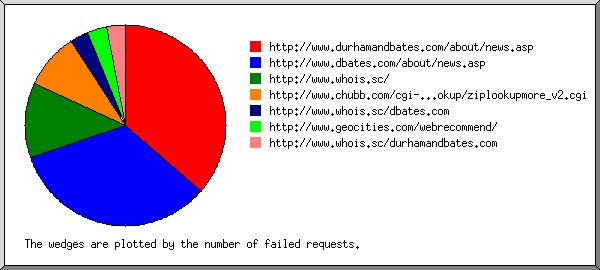
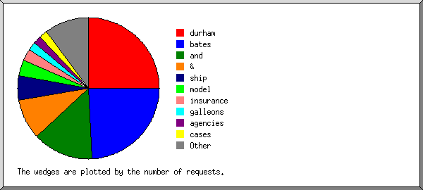
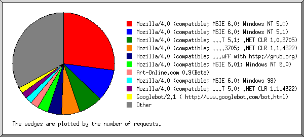
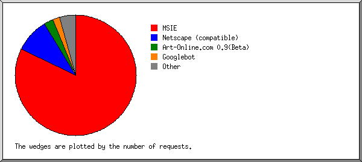
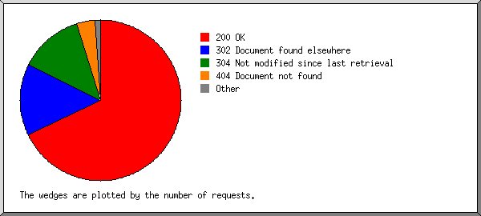
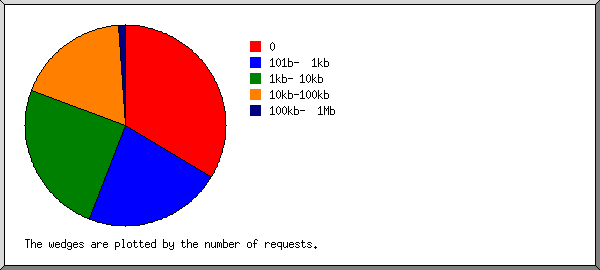
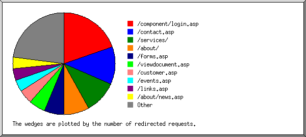
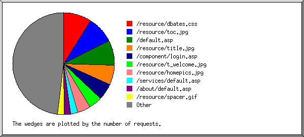

Web Server Statistics for es57045 Web Server Statistics for es57045
Web Server Statistics for es57045 Web Server Statistics for es57045(Go To: Top: General Summary: Monthly Report: Daily Summary: Hourly Summary: Failed Referrer Report: Search Word Report: Browser Report: Browser Summary: Operating System Report: Status Code Report: File Size Report: Redirection Report: Request Report)
This report contains overall statistics.
(Figures in parentheses refer to the 7-day period ending Dec 31
2003 at 11:59 PM).
Successful requests: 3,587 (597)
Average successful requests per day: 118 (85)
Logfile lines without status code: 93 (0)
Successful requests for pages: 2 (0)
Failed requests: 201 (54)
Redirected requests: 645 (147)
Distinct files requested: 186 (88)
Distinct hosts served: 399 (102)
Corrupt logfile lines: 2
Unwanted logfile entries: 8
Data transferred: 29.100 Mbytes (3.060 Mbytes)
Average data transferred per day: 981.717 kbytes (447.736 kbytes)
(Go To: Top: General Summary: Monthly Report: Daily Summary: Hourly Summary: Failed Referrer Report: Search Word Report: Browser Report: Browser Summary: Operating System Report: Status Code Report: File Size Report: Redirection Report: Request Report)
This report lists the activity in each month.
Each unit ( ) represents 1 request
for a page.
) represents 1 request
for a page.
month: #reqs: #pages: --------: -----: ------: Dec 2003: 3587: 2:Busiest month: Dec 2003 (2 requests for pages).
(Go To: Top: General Summary: Monthly Report: Daily Summary: Hourly Summary: Failed Referrer Report: Search Word Report: Browser Report: Browser Summary: Operating System Report: Status Code Report: File Size Report: Redirection Report: Request Report)
This report lists the total activity for each day of the week, summed over all the weeks in the report.
Each unit () represents 1 request
for a page.
day: #reqs: #pages: ---: -----: ------: Sun: 248: 0: Mon: 411: 2:
(Go To: Top: General Summary: Monthly Report: Daily Summary: Hourly Summary: Failed Referrer Report: Search Word Report: Browser Report: Browser Summary: Operating System Report: Status Code Report: File Size Report: Redirection Report: Request Report)
This report lists the total activity for each hour of the day, summed over all the days in the report.
Each unit () represents 1 request
for a page.
hour: #reqs: #pages: ----: -----: ------: 0: 191: 0: 1: 156: 0: 2: 87: 0: 3: 114: 0: 4: 52: 0: 5: 86: 0: 6: 96: 0: 7: 128: 0: 8: 14: 0: 9: 24: 0: 10: 40: 0: 11: 31: 0: 12: 70: 0: 13: 90: 0: 14: 71: 2:
(Go To: Top: General Summary: Monthly Report: Daily Summary: Hourly Summary: Failed Referrer Report: Search Word Report: Browser Report: Browser Summary: Operating System Report: Status Code Report: File Size Report: Redirection Report: Request Report)
This report lists the referrers containing broken links to the site.

Listing referring URLs, sorted by the number of failed requests.
#reqs: URL
-----: ---
12: http://www.durhamandbates.com/about/news.asp
11: http://www.dbates.com/about/news.asp
4: http://www.whois.sc/
3: http://www.chubb.com/cgi-bin/agentlookup/ziplookupmore_v2.cgi
1: http://www.whois.sc/dbates.com
1: http://www.geocities.com/webrecommend/
1: http://www.whois.sc/durhamandbates.com
(Go To: Top: General Summary: Monthly Report: Daily Summary: Hourly Summary: Failed Referrer Report: Search Word Report: Browser Report: Browser Summary: Operating System Report: Status Code Report: File Size Report: Redirection Report: Request Report)
This report lists which words people used in search engines to find the site.

Listing query words, sorted by the number of requests.
#reqs: search term
-----: -----------
27: durham
26: bates
15: and
10: &
6: ship
4: model
3: insurance
2: galleons
2: agencies
2: cases
2: durhamandbates.com
2: models
1: jewelry
1: spanish
1: portland
1: www.dbates.com
1: bone
1: inc
1: whaling
(Go To: Top: General Summary: Monthly Report: Daily Summary: Hourly Summary: Failed Referrer Report: Search Word Report: Browser Report: Browser Summary: Operating System Report: Status Code Report: File Size Report: Redirection Report: Request Report)
This report lists the browsers used by visitors.

Listing the top 40 browsers by the number of requests, sorted by the number of requests.
#reqs: browser -----: ------- 970: Mozilla/4.0 (compatible; MSIE 6.0; Windows NT 5.0) 355: Mozilla/4.0 (compatible; MSIE 6.0; Windows NT 5.1) 268: Mozilla/4.0 (compatible; MSIE 6.0; Windows NT 5.1; .NET CLR 1.0.3705) 209: Mozilla/4.0 (compatible; MSIE 6.0; Windows 98; .NET CLR 1.0.3705; .NET CLR 1.1.4322) 159: Mozilla/4.0 (compatible; grub-client-1.5.3; Crawl your own stuff with http://grub.org) 121: Mozilla/4.0 (compatible; MSIE 5.01; Windows NT 5.0) 90: Art-Online.com 0.9(Beta) 77: Mozilla/4.0 (compatible; MSIE 6.0; Windows 98) 71: Mozilla/4.0 (compatible; MSIE 6.0; Windows NT 5.0; .NET CLR 1.1.4322) 70: Googlebot/2.1 ( http://www.googlebot.com/bot.html) 68: Mozilla/4.0 (compatible; MSIE 6.0; Windows NT 5.1; .NET CLR 1.0.3705; .NET CLR 1.1.4322) 68: Mozilla/4.0 (compatible; MSIE 6.0; Windows NT 5.1; .NET CLR 1.1.4322) 62: Mozilla/4.0 (compatible; MSIE 6.0; Windows NT 5.1; .NET CLR 1.1.4322; Alexa Toolbar) 51: Mozilla/4.0 compatible ZyBorg/1.0 Dead Link Checker (wn.zyborg@looksmart.net; http://www.WISEnutbot.com) 48: Mozilla/4.0 (compatible; MSIE 5.5; Windows NT 5.0) 48: Mozilla/4.0 (compatible; MSIE 6.0; Windows NT 5.0; .NET CLR 1.0.3705) 48: Mozilla/4.0 (compatible; MSIE 6.0; Windows NT 5.1; (R1 1.3)) 47: Mozilla/4.0 (compatible; MSIE 4.01; Windows CE; PPC; 240x320) 47: Mozilla/4.0 (compatible; MSIE 6.0; AOL 9.0; Windows NT 5.1; (R1 1.3); .NET CLR 1.1.4322) 40: Mozilla/4.0 (compatible; MSIE 5.00; Windows 98 36: Mozilla/4.0 (compatible; MSIE 6.0; Windows NT 5.1; MyIE2) 36: Mozilla/4.0 (compatible; MSIE 5.5; Windows 98) 34: Mozilla/4.0 (compatible; grub-client-1.4.3; Crawl your own stuff with http://grub.org) 32: LinkWalker 28: Mozilla/4.0 (compatible; MSIE 5.5; Windows NT 4.0) 26: Mozilla/4.0 (compatible; MSIE 5.01; Windows 98) 24: Mozilla/4.0 (compatible; MSIE 6.0; Windows NT 5.0; T312461) 22: Mozilla/4.0 (compatible; MSIE 6.0; Windows NT 5.1; Q312461; .NET CLR 1.1.4322) 22: Mozilla/3.0 (compatible; Indy Library) 20: Mozilla/5.0 (Slurp/cat; slurp@inktomi.com; http://www.inktomi.com/slurp.html) 18: Mozilla/4.0 (compatible; MSIE 6.0; Windows 98; FunWebProducts) 18: Mozilla/3.01 (compatible;) 17: MSFrontPage/4.0 16: Mozilla/4.0 (compatible; MSIE 5.5; AOL 8.0; Windows 98; Win 9x 4.90) 16: Mozilla/4.0 (compatible; MSIE 6.0; AOL 7.0; Windows NT 5.1; AT&T CSM7.0; .NET CLR 1.0.3705) 16: Mozilla/4.0 (compatible; grub-client-1.3.7; Crawl your own stuff with http://grub.org) 15: Mozilla/4.0 (compatible; MSIE 6.0; Windows 98; AT&T WNS5.0) 14: Mozilla/4.0 (compatible; MSIE 5.5; Windows 98; YComp 5.0.0.0) 14: Mozilla/4.0 (compatible; MSIE 5.0; Windows NT; Girafabot; girafabot at girafa dot com; http://www.girafa.com) 13: ia_archiver 213: [not listed: 45 browsers]
(Go To: Top: General Summary: Monthly Report: Daily Summary: Hourly Summary: Failed Referrer Report: Search Word Report: Browser Report: Browser Summary: Operating System Report: Status Code Report: File Size Report: Redirection Report: Request Report)
This report lists the vendors of visitors' browsers.

Listing the top 20 browsers by the number of requests, sorted by the number of requests.
#reqs: browser
-----: -------
2931: MSIE
2479: MSIE/6
405: MSIE/5
47: MSIE/4
326: Netscape (compatible)
90: Art-Online.com 0.9(Beta)
70: Googlebot
70: Googlebot/2
32: LinkWalker
26: Netscape
6: Mozilla/1
17: MSFrontPage
17: MSFrontPage/4
15: FAST-WebCrawler
15: FAST-WebCrawler/3
13: ia_archiver
10: NPBot (http:
10: NPBot (http://www
7: Netscape
7: Netscape/4
6: TurnitinBot
6: TurnitinBot/1
6: SurveyBot
6: SurveyBot/2
4: NaverBot-1.0 (NHN Corp.
4: NaverBot-1.0 (NHN Corp. /
4: UP.Browser
4: UP.Browser/6
3: http:
3: http://www
1: Java
1: Java/1
1: MFC_Tear_Sample
1: www.nmsalert.com (website monitoring)
1: udjovkmkvxspdyjwto xnvvkyjxlb7v
3: [not listed: 3 browsers]
(Go To: Top: General Summary: Monthly Report: Daily Summary: Hourly Summary: Failed Referrer Report: Search Word Report: Browser Report: Browser Summary: Operating System Report: Status Code Report: File Size Report: Redirection Report: Request Report)
This report lists the operating systems used by visitors.
Listing operating systems, sorted by the number of requests for pages.
#: #reqs: #pages: OS --: -----: ------: -- 1: 529: 2: OS unknown 2: 6: 0: Unix : 6: 0: Linux 3: 95: 0: Robots 4: 10: 0: Macintosh : 10: 0: Macintosh PowerPC 5: 2927: 0: Windows : 3: 0: Windows 95 : 999: 0: Windows XP : 47: 0: Windows CE : 461: 0: Windows 98 : 70: 0: Windows NT : 1317: 0: Windows 2000 : 30: 0: Windows ME
(Go To: Top: General Summary: Monthly Report: Daily Summary: Hourly Summary: Failed Referrer Report: Search Word Report: Browser Report: Browser Summary: Operating System Report: Status Code Report: File Size Report: Redirection Report: Request Report)
This report lists the HTTP status codes of all requests.

Listing status codes, sorted numerically.
#reqs: status code
-----: -----------
3005: 200 OK
13: 206 Partial content
645: 302 Document found elsewhere
569: 304 Not modified since last retrieval
27: 401 Authentication required
2: 403 Access forbidden
169: 404 Document not found
2: 405 Method not allowed
1: 500 Internal server error
(Go To: Top: General Summary: Monthly Report: Daily Summary: Hourly Summary: Failed Referrer Report: Search Word Report: Browser Report: Browser Summary: Operating System Report: Status Code Report: File Size Report: Redirection Report: Request Report)
This report lists the sizes of files.

size: #reqs: %bytes:
-----------: -----: ------:
0: 1206: :
1b- 10b: 0: :
11b- 100b: 0: :
101b- 1kb: 792: 0.61%:
1kb- 10kb: 895: 6.00%:
10kb-100kb: 656: 78.28%:
100kb- 1Mb: 38: 15.11%:
(Go To: Top: General Summary: Monthly Report: Daily Summary: Hourly Summary: Failed Referrer Report: Search Word Report: Browser Report: Browser Summary: Operating System Report: Status Code Report: File Size Report: Redirection Report: Request Report)
This report lists the files that caused requests to be redirected to another file. (Usually directories with the final slash missing, or CGI scripts that forced redirections.)

Listing the top 30 files by the number of redirected requests, sorted by the number of redirected requests.
#reqs: file
-----: ----
127: /component/login.asp
77: /contact.asp
67: /services/
51: /about/
40: /forms.asp
34: /viewdocument.asp
20: /viewdocument.asp?ID=QEBPEDBU
14: /viewdocument.asp?ID=TBBLGBSX
28: /customer.asp
25: /events.asp
24: /links.asp
24: /about/news.asp
23: /risk101.asp
20: /focus/mvrreg/mvrreg0.asp
20: /sitemap.asp
18: /focus/mvrreg/default.asp
17: /focus/euse/euse1.asp
6: /agent/
6: /directry.asp
5: /agent/recvd.asp
3: /focus/euse/
3: /agent/default.asp
3: /editform.asp
3: /focus/euse/default.asp
2: /uw/
2: /focus/mvrreg/
2: /about/shiptour/
2: /agent/uwpage.aspx
2: /agent/retrieveform.asp
2: /privacy.asp
2: /uw/default.asp
2: /loadform.asp
5: [not listed: 5 files]
(Go To: Top: General Summary: Monthly Report: Daily Summary: Hourly Summary: Failed Referrer Report: Search Word Report: Browser Report: Browser Summary: Operating System Report: Status Code Report: File Size Report: Redirection Report: Request Report)
This report lists the files on the site.

Listing files with at least 20 requests, sorted by the number of requests.
#reqs: %bytes: last time: file -----: ------: ------------------: ---- 320: 1.11%: Dec/31/03 10:42 PM: /resource/dbates.css 311: 20.42%: Dec/31/03 10:42 PM: /resource/toc.jpg 287: 0.04%: Dec/31/03 10:43 PM: /default.asp 220: 10.37%: Dec/31/03 10:42 PM: /resource/title.jpg 192: 0.18%: Dec/31/03 11:16 PM: /component/login.asp 151: 0.76%: Dec/31/03 10:42 PM: /resource/t_welcome.jpg 150: 13.90%: Dec/31/03 10:42 PM: /resource/homepics.jpg 80: : Dec/31/03 10:43 PM: /services/default.asp 76: : Dec/31/03 11:39 AM: /about/default.asp 75: 0.19%: Dec/31/03 10:43 PM: /resource/spacer.gif 68: : Dec/31/03 10:44 PM: /contact.asp 55: 15.13%: Dec/31/03 10:43 PM: /resource/services.jpg 54: 13.75%: Dec/31/03 10:44 PM: /resource/contacttx.jpg 54: 0.21%: Dec/30/03 10:44 PM: /resource/t_about.jpg 54: 0.13%: Dec/30/03 10:44 PM: /resource/x_master.jpg 43: 0.13%: Dec/30/03 10:43 PM: /resource/dotdoc.jpg 41: 4.61%: Dec/31/03 7:49 AM: /directry.asp 37: 6.13%: Dec/30/03 10:44 PM: /resource/about.jpg 37: 0.16%: Dec/31/03 10:43 PM: /resource/dialc.jpg 36: 0.25%: Dec/30/03 8:41 PM: /resource/t_contact.jpg 35: 0.13%: Dec/31/03 10:43 PM: /resource/dialp.jpg 33: : Dec/31/03 10:43 PM: /services/prof0.asp 31: : Dec/31/03 6:23 AM: /customer.asp 31: : Dec/31/03 2:53 PM: /about/begin.asp 30: 0.12%: Dec/31/03 10:43 PM: /resource/dialn.jpg 30: : Dec/31/03 12:30 PM: /privacy.asp 29: : Dec/31/03 6:18 PM: /services/marine_c.asp 28: 1.10%: Dec/30/03 10:44 PM: /resource/abouttx.jpg 27: : Dec/31/03 6:24 AM: /signin.asp 25: : Dec/31/03 6:59 PM: /services/marine_x.asp 24: : Dec/31/03 3:00 PM: /about/ships.asp 23: : Dec/31/03 6:23 AM: /events.asp 23: 0.19%: Dec/30/03 10:43 PM: /resource/t_resource.jpg 22: 0.11%: Dec/30/03 10:43 PM: /resource/linetab.gif 21: 0.13%: Dec/30/03 10:43 PM: /resource/logon.gif 21: : Dec/31/03 6:23 AM: /risk101.asp 813: 10.76%: Dec/31/03 10:43 PM: [not listed: 142 files]
(Go To: Top: General Summary: Monthly Report: Daily Summary: Hourly Summary: Failed Referrer Report: Search Word Report: Browser Report: Browser Summary: Operating System Report: Status Code Report: File Size Report: Redirection Report: Request Report)